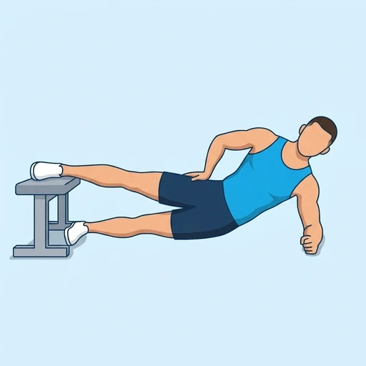
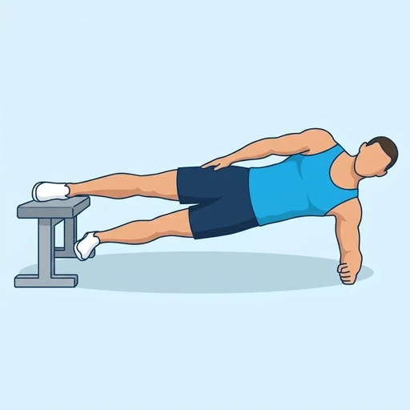

Copenhagen Plank Raises
A dynamic version of the Copenhagen plank: you hold a side plank with the top leg resting on a flat bench and lift the lower leg up to meet it, then lower it again. The inner thigh muscles of both legs and the obliques work together, and the movement is demanding for the adductors.
Core · Flat Bench · Advanced


Muscles worked by the Copenhagen Plank Raises
Primary
Secondary
Also called: hip adductors, inner thigh, adductor muscles, groin, oblique, obliques.
Equipment
Also called: bench, flat weight bench, utility bench, adjustable bench (flat).
How to do the Copenhagen Plank Raises
- Lie on your side next to a flat bench and place your top leg on it, with the knee or the inner foot resting on the bench.
- Prop yourself up on the elbow of your lower arm, directly under the shoulder.
- Lift your hips so that your body forms a straight line from your head to your top foot, with the lower leg hanging underneath.
- Raise the lower leg up toward the bench until it nearly touches the top leg, keeping your hips high.
- Lower the lower leg slowly without letting your hips drop, and repeat for the planned repetitions.
- Rest, then switch sides.
Form tips
- Start with the top knee on the bench and a short lever; move the foot of the top leg onto the bench only when the raises feel easy.
- Keep your hips high and your body in one line; dropping the hips takes the load off the inner thighs.
- Move slowly and stop if you feel a sharp pull in the groin; the adductors need a gentle build-up.
At a glance
| Body part | Core |
|---|---|
| Category | Strength |
| Force type | Dynamic |
| Mechanic | Compound |
| Difficulty | Advanced |
| Equipment | Flat Bench |
| Goals | Core, Strength |
| Tags | Core, Core focus, Calisthenics, Lower back safe, No axial load, Requires bench |
| MET | 6.0 (metabolic equivalent, for calorie estimates) |
| Unilateral | Yes |
| Bodyweight | No |
| Dataset id | copenhagen-plank-raises |
Copenhagen Plank Raises in German & Spanish
| German | Copenhagen Plank Raises |
|---|---|
| Spanish | Elevaciones en Plancha Copenhague |
Descriptions, instructions and tips ship in all three languages in the JSON.
Related exercises
Exercise data (JSON)
The record below is exactly what exercises.json ships for this exercise — names, descriptions, instructions and tips in English, German and Spanish.
{
"id": "copenhagen-plank-raises",
"name_en": "Copenhagen Plank Raises",
"name_de": "Copenhagen Plank Raises",
"name_es": "Elevaciones en Plancha Copenhague",
"description_en": "A dynamic version of the Copenhagen plank: you hold a side plank with the top leg resting on a flat bench and lift the lower leg up to meet it, then lower it again. The inner thigh muscles of both legs and the obliques work together, and the movement is demanding for the adductors.",
"description_de": "Eine dynamische Variante der Copenhagen Plank: Du hältst einen Side Plank, das obere Bein liegt auf einer flachen Bank, und hebst das untere Bein nach oben zu diesem, dann senkst du es wieder ab. Die Adduktoren beider Beine und die schrägen Bauchmuskeln arbeiten zusammen, und die Bewegung ist für die Adduktoren anspruchsvoll.",
"description_es": "Una versión dinámica de la plancha Copenhague: mantienes una plancha lateral con la pierna de arriba apoyada en un banco plano, subes la pierna de abajo hasta encontrarte con ella y la vuelves a bajar. Los músculos de la cara interna del muslo de ambas piernas y los oblicuos trabajan juntos, y el movimiento es muy exigente para los aductores.",
"category": "strength",
"force_type": "dynamic",
"mechanic": "compound",
"difficulty": "advanced",
"equipment": "flat_bench",
"body_part": "core",
"primary_muscles": [
"adductors",
"obliques"
],
"secondary_muscles": [
"gluteus_medius",
"quadratus_lumborum",
"transverse_abdominis"
],
"goals": [
"core",
"strength"
],
"tags": [
"core",
"core_focus",
"calisthenics",
"lower_back_safe",
"no_axial_load",
"requires_bench"
],
"variation_group": "plank",
"is_unilateral": true,
"is_bodyweight": false,
"instructions_en": [
"Lie on your side next to a flat bench and place your top leg on it, with the knee or the inner foot resting on the bench.",
"Prop yourself up on the elbow of your lower arm, directly under the shoulder.",
"Lift your hips so that your body forms a straight line from your head to your top foot, with the lower leg hanging underneath.",
"Raise the lower leg up toward the bench until it nearly touches the top leg, keeping your hips high.",
"Lower the lower leg slowly without letting your hips drop, and repeat for the planned repetitions.",
"Rest, then switch sides."
],
"instructions_de": [
"Lege dich seitlich neben eine flache Bank und lege das obere Bein darauf, wobei das Knie oder die Innenseite des Fußes auf der Bank ruht.",
"Stütze dich auf den Ellbogen des unteren Arms, direkt unter der Schulter.",
"Hebe die Hüfte, sodass dein Körper von Kopf bis zum oberen Fuß eine gerade Linie bildet und das untere Bein darunter hängt.",
"Hebe das untere Bein nach oben zur Bank, bis es das obere Bein fast berührt, und halte dabei die Hüfte hoch.",
"Senke das untere Bein langsam ab, ohne die Hüfte absinken zu lassen, und wiederhole für die geplante Anzahl an Wiederholungen.",
"Ruhe dich aus und wechsle dann die Seite."
],
"instructions_es": [
"Túmbate de lado junto a un banco plano y coloca la pierna de arriba sobre él, con la rodilla o el borde interno del pie apoyado en el banco.",
"Apóyate sobre el codo del brazo de abajo, justo debajo del hombro.",
"Sube las caderas para que el cuerpo forme una línea recta desde la cabeza hasta el pie de arriba, con la pierna de abajo colgando por debajo.",
"Eleva la pierna de abajo hacia el banco hasta que casi toque la pierna de arriba, manteniendo las caderas altas.",
"Baja la pierna de abajo despacio sin dejar que las caderas caigan y repite el número de repeticiones previsto.",
"Descansa y cambia de lado."
],
"tips_en": [
"Start with the top knee on the bench and a short lever; move the foot of the top leg onto the bench only when the raises feel easy.",
"Keep your hips high and your body in one line; dropping the hips takes the load off the inner thighs.",
"Move slowly and stop if you feel a sharp pull in the groin; the adductors need a gentle build-up."
],
"tips_de": [
"Beginne mit dem oberen Knie auf der Bank und einem kurzen Hebel; setze den Fuß des oberen Beins erst auf die Bank, wenn sich die Wiederholungen leicht anfühlen.",
"Halte die Hüfte hoch und den Körper in einer Linie; wenn die Hüfte absinkt, nimmt das die Last von den Oberschenkelinnenseiten.",
"Bewege dich langsam und höre auf, wenn du einen stechenden Zug in der Leiste spürst; die Adduktoren brauchen einen behutsamen Aufbau."
],
"tips_es": [
"Empieza con la rodilla de arriba sobre el banco y una palanca corta; apoya el pie de la pierna de arriba en el banco solo cuando las elevaciones te resulten fáciles.",
"Mantén las caderas altas y el cuerpo en una sola línea; si las caderas caen, la carga sale de la cara interna de los muslos.",
"Muévete despacio y para si notas un tirón agudo en la ingle; los aductores necesitan una progresión gradual."
],
"met": 6.0,
"images": {
"flat": {
"start": "images/flat/copenhagen-plank-raises-start.webp",
"peak": "images/flat/copenhagen-plank-raises-peak.webp"
}
}
}Fetch just this exercise
const { exercises } = await fetch(
"https://exercise-dataset.com/exercises.json"
).then(r => r.json());
const ex = exercises.find(e => e.id === "copenhagen-plank-raises");Free for personal and commercial in-app use with attribution (“Exercise data by RepDB”) — see the license and ready-made attribution snippets. Redistributing the data as a dataset or API is not permitted.